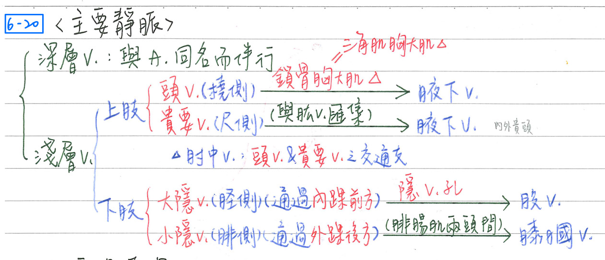
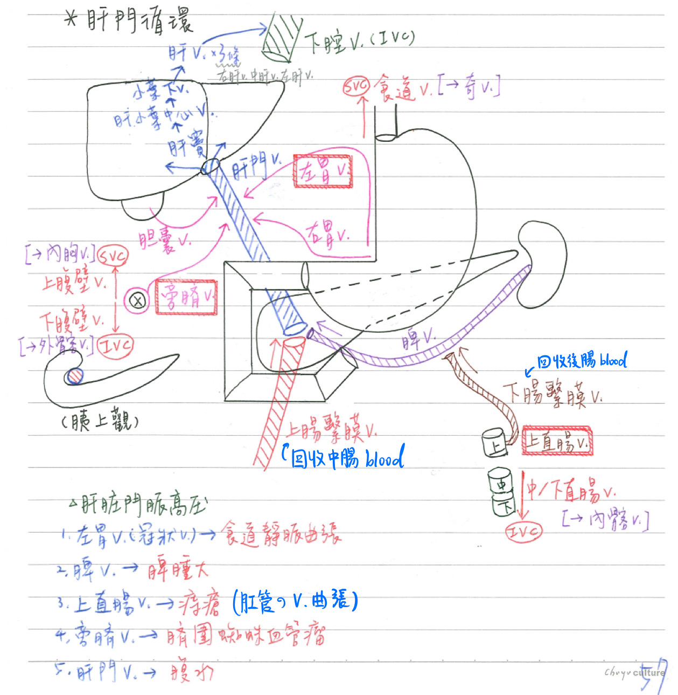
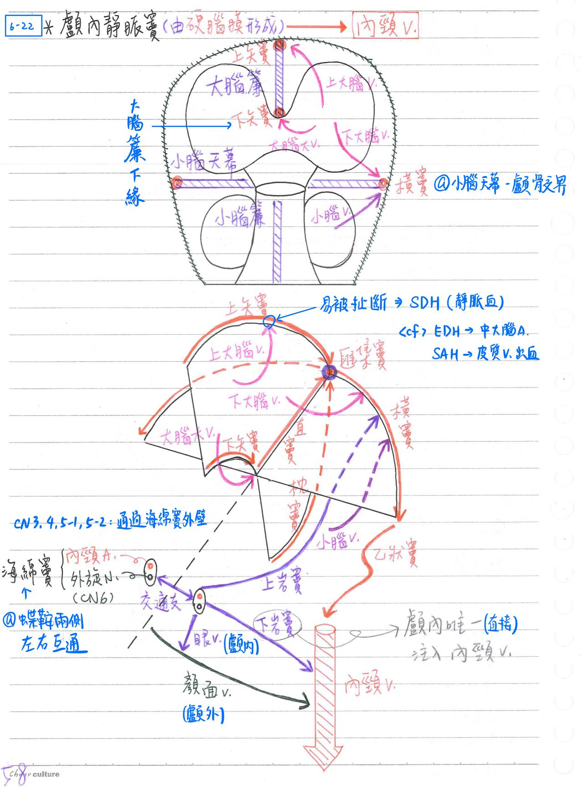
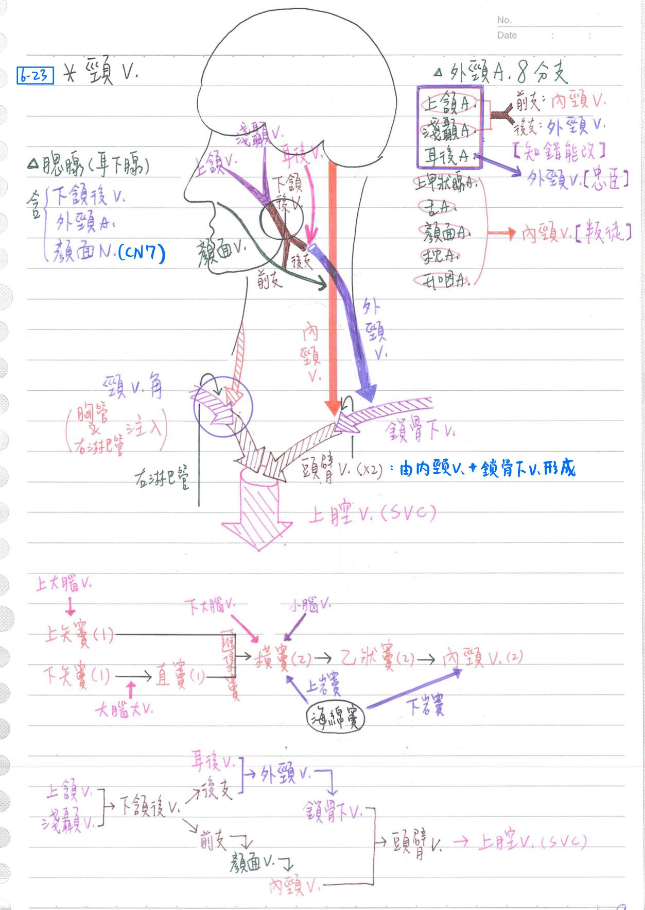
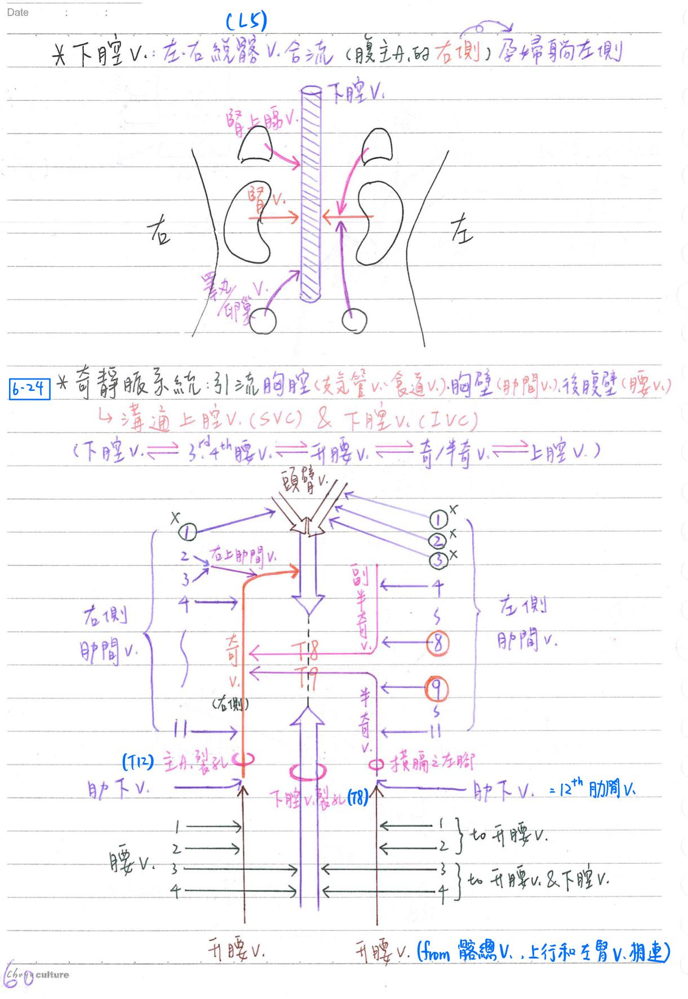

🩸 血管：主要靜脈[近期每年考]
靜脈系統(總覽)
- 淺層靜脈系統：輔助回流系統，位於四肢，旁邊並無同名動脈伴行
- 深層靜脈系統：主要回流系統，旁邊有同名動脈伴行
- ★頭頸部靜脈沒有瓣膜
淺層靜脈系統
- 上肢：[hint：內外貴頭]
- 頭靜脈(cephalic v.)：位於上肢外側(橈側)，與★★外側前臂皮N.伴行
- 起自手部背靜脈網(dorsal venous network)外側，注入腋下V.
- 於★三角肌胸大肌三角(deltopectoral △)/鎖骨胸大肌三角(clavipectoral △)穿越深筋膜注入腋下V.。
- 鎖骨胸大肌三角：鎖骨、胸大肌、三角肌所圍成之三角形凹陷
- 貴要靜脈(basilic v.)：位於上肢內側(尺側)，與內側前臂皮N.伴行
- 起自手部背靜脈網內側，與肱V. 匯集成腋下V.
- 肘中靜脈(median cubital v.)：為頭靜脈與貴要靜脈之交通枝
- 頭靜脈(cephalic v.)：位於上肢外側(橈側)，與★★外側前臂皮N.伴行
- 下肢：
- 大隱V(greater saphenous v.)：位於★[108-1]下肢內側(脛側)；和隱N伴行
- 起自足部背靜脈弓內側，經內踝前方
- 經隱静脈孔注入股V.
- 為全身最長血管，★常用作冠狀動脈繞道手術(CABG)的graft
- 小隱V(small saphenous v.)：位於下肢外側(腓側→)；★和腓腸N伴行
- 起自足部背靜脈弓外側，經外踝後方
- 經腓腸肌兩頭之間注入膕V.
- 大隱V(greater saphenous v.)：位於★[108-1]下肢內側(脛側)；和隱N伴行

[考到爆]肝門循環
- 肝門靜脈(portal v.)：負責將消化道(前、中、後腸)吸收之物質送至肝臓
- 起自胰頸後方(約L2高度)，向上經十二指腸1st部分後方、肝十二指腸韌帶(小網膜)，經肝門進入肝臓
- 由★上腸繫膜V (SMV)+脾靜脈(splenic v.)匯集而成
- ★下腸繫膜V (IMV)：注入脾V
- 回收★★後腸(大腸後半)之靜脈血
- 上腸繫膜V (SMV)：跨越十二指腸3rd部份前方，穿越胰臟的胰頸(前)&鉤狀突(後)之間
- 回收★中腸(小腸+大腸前半)之靜脈血
- ★下腸繫膜V (IMV)：注入脾V
- 肝門V之分枝注入肝竇(微血管)→肝小葉中心V→小葉下V→肝靜脈。
- 2~3條肝V[左、(中)、右]離開肝臓，注入下腔靜脈(IVC)
- 直徑：0.8cm；長度：6.5cm；壓力：7~10mmHg
- 左胃V、右胃V、膽囊V、旁臍V等：★直接注入肝門V
- [重點]★★肝門靜脈-體靜脈吻合(portal-systemic anastomosis)：肝門V. 阻塞時的替代道路
- ★肛管上1/2：上直腸靜脈(門脈)&中/下直腸靜脈(→內髂V→IVC)
- ★食道下1/3：左胃靜脈(門脈)& 食道靜脈(→奇V.→IVC)
- ★前腹壁臍周圍：旁臍靜脈(門脈)& 上/下腹壁靜脈(→內胸V→SVC；外髂V→IVC)
- 肝臓門脈高壓(portal hypertension)：肝門靜脈壓>15mmHg，導致→
- ★食道靜脈曲張：由左胃靜脈[=冠狀靜脈(coronary v.)]代償性分流肝門靜脈瘀滯的血流(逆肝流動)→食道V.
- ★脾腫大：脾V(血流往回淹，因為脾本身可以儲存血液，所以比較不會造成靜脈曲張)
- ★痔瘡(肛管之靜脈曲張)：上直腸V
- 臍圍蜘蛛血管瘤(caput Medusa)：★旁臍V
- 腹水：肝門V.；靜水壓↑±膠體滲透壓↓

顱內靜脈竇：由硬腦膜(dura)形成
- 上矢竇(superior sagittal sinus) ：
- ★注入匯集竇(confluence ofsinuses)；大部份再流向右橫竇
- 位於大腦鐮之附著緣(大腦鐮與顱骨之交界線)
- 有上大腦V.(superior cerebral v.)注入
- 注入上矢狀竇處易被扯斷，造成硬腦膜下腔出血(SDH)
- <cf>EDH—>中大腦A.出血
SAH—>皮質V.出血
- frontal emissary v.：★[110-1]連接鼻腔&額竇→上矢竇
- 通過盲孔(foramen caecum)
- emissary v.：連接顱內靜脈竇及顱外靜脈系統的靜脈統稱
- 下矢竇(inferior sagittal sinus)
- 注入直竇(straight sinus)；再注入匯集竇；大部份再流向左橫竇。
- 位於大腦鐮之下緣(游離緣)
- 直竇(straight sinus):
- 由★下矢竇及★大腦大V.(great cerebral V.)匯集而成
- 位於★★大腦鐮、小腦天幕、小腦鐮之交界線
- 橫竇(transverse sinus)：
- 有3條靜脈注入：上岩竇、下大腦v.(inf. cerebral V.)、小腦v.(cerebellar v.)
- 位小腦天幕之附著緣(小腦天幕與顱骨之交界線)
- ★注入乙狀竇
- 枕竇(occipital sinus)：★單一(不成對)
- 注入匯集竇(confluence of sinuses)
- 位於小腦鐮之附著緣(即小腦鐮與顱骨之交界線)
- 匯集竇(confluence ofsinses)：由上矢竇、直竇(下矢竇+大腦大V.)、横竇、枕竇等匯集而成
- 顱內靜脈竇最終注入內頸V.
海綿竇(cavernous sius)[近幾年超愛考]
- 位於蝶鞍之兩側，左右互通(intercavernous sinus)
- ★★[109-1]經上岩竇(sup.petrosal sinus)注入横竇
- 經★下岩竇(inf. petrosal sinus)注入內頸V.
- ★經上&下眼V.(ophthalmic v.)與顱外的顏面V.互通
- ★臉部危險三角(鼻、唇之間)：顱外與顱內靜脈互通區；★顱內↔眼V↔顏面V
- 內頸A、★[109-2]外旋神經(CN6)通過海綿竇之內部
- ★CN3, 4, 5-1(眼支), 5-2(上頷支)通過海綿竇外壁(内皮細胞層)&硬腦膜之間

頸靜脈
- 內頸靜脈：★為乙狀竇之延伸,與鎖骨下V.匯流成頭臂V.
- 有以下靜脈注入：顱內靜脈竇、顏面V.、舌V.、咽V.(pharyngeal)、枕V.、上&中甲狀腺V.
- 外頸靜脈(ext. jugular v.)：注入鎖骨下V.
- 兩條靜脈於起點注入：耳後V.&下頷後V.之後枝
- 下頷後靜脈(retromandibular)：
- 由淺顳V.& 上頷V.匯集而成
- 前枝→注入顏面V.
後枝→與耳後V.匯集成外頸V.
- 耳下腺(腮腺)：內含下頷後V.、外頸A.、顏面N.
- 下頷後靜脈(retromandibular)：
- 3條靜脈於頸部注入：橫頸V.、前頸V.、肩胛上V.
- 斜跨於胸鎖乳突肌前面，於頸後三角注入鎖骨下V.。
- 兩條靜脈於起點注入：耳後V.&下頷後V.之後枝
- 顏面靜脈(facial v.)：注入內頸V.
- 由滑車上V.(supratrochlear)&眶上V.(supraorbital)匯集而成。
- 具眶下V.(infraorbital)、深面V.(deep facial)等分枝。
上腔靜脈
- 由左、右頭臂V.匯流而成(★[107-2]@胸骨柄右緣 匯入)，注入右心房
- 上端：胸骨柄與右側R1交接處；下端：胸骨體與右側R3交接處
- 頭臂靜脈(brachiocephalic)：內頸V & 鎖骨下V合流而成，左右成對
- ★★[110-1]下甲狀腺V直接注入
- 頸靜脈角(jugular angle)：內頸V & 鎖骨下V匯集處
- 胸管、右淋巴管注入頸靜脈角；奇V.注入上腔V.
- 頭臂靜脈(brachiocephalic)：內頸V & 鎖骨下V合流而成，左右成對

下腔靜脈
- 由左、右總髂V.合流而成(L5)，注入右心房
- 位於腹主動脈之右側，穿過下腔靜脈裂孔(L8)
- 懷孕末期鼓勵孕婦左側躺(左半身向下)→助下腔V回流
- 直接注入下腔靜脈者：
- 左、右腎V.
- 左、右下膈V
- 左、右 3rd & 4th 腰V.
- 左、右1st & 2nd腰V. ：注入左、右升腰V.→半奇V.→奇V.
備註
是半奇V.→奇V.，不是副半奇V.→奇V. (醫師解剖那本有寫錯)
- 左、右1st & 2nd腰V. ：注入左、右升腰V.→半奇V.→奇V.
- 右腎上腺V.、睪丸(卵巢)V.
- ★★★★★★左腎上腺V.、左睪丸(卵巢)V.→左腎V.
- 精索靜脈曲張：通常發生於左側(因為左睪丸V.要先匯入左腎V.→繞路)
- 2~3條 肝V. [左、(中)、右]
奇靜脈系統
- 引流：胸腔(支氣管/食道V)、胸壁(肋間V)、後腹壁(腰V、升腰V)之靜脈血
- 溝通上腔靜脈(SVC)及下腔靜脈(IVC)
- IVC→腰V→升腰V.→半奇V & 奇V. ←SVC
奇靜脈
- 僅1條，位於胸腔偏右，★★[110-1]注入上腔V. (SVC)
- 由★[110-1]右升腰靜脈(ascendinglumbar) & ★右肋下靜脈(subcostal)之匯集，向上穿越主動脈裂孔
- 直接注入奇靜脈：
- ★右支氣管靜脈(bronchial v.)
- 食道靜脈(esophageal v.)
- ★[110-1]右側肋間靜脈(4th~11th)
- ★[108-2]右側1st肋間V：注入右頭臂V.(不注入奇靜脈系統)
- 右側第2~3肋間V：先匯集成★右上肋間V.→注入奇V.
上半奇靜脈(sup.hemiazygos)/副半奇靜脈(accessory hemiazygos)
- 位於胸腔偏左上方，於T8前跨越中線注入奇V.
- 引流左側4~8th 肋間V.
- ★[108-2]★[110-1]左側第1~3肋間V：注入左頭臂V，不注入奇靜脈系統
- 左側支氣管V.、食道V. 等：先注入半奇V. 或副半奇V. →注入奇V.
下半奇靜(inf. hemiazygos)/半奇靜脈(hemiazygos)
- 位於胸腔偏左下方，★於T9前跨越中線注入奇V.
- 穿越橫膈之左腳(left crus)
- 由左側升腰V & ★左肋下V.(=12th肋間V. )之匯集，引流★左側9~11th肋間V.
- <cf> 1~2nd腰V→升腰V；3~4th腰V→IVC & 升腰V

特定血管穿刺
- 中心靜脈
- 上腔靜脈(SVC)←鎖骨下V、內頸V.
- 下腔靜脈(IVC)←股V.(位於股A之內側)
- 靜脈切開(venous cut-down)
- 大隱V：內踝前2cm處
- 正中肘V(median cubital vein/antecubital vein)：肘彎曲處(抽血處)
備註
趙神是寫antecubital vein，但median cubital vein的稱呼較常見
📖 書本補充：與筆記不同或筆記沒寫到的地方
⚠️
以下為對照書本後整理，筆記原文未更動。標「筆記 vs 書」的是兩邊寫法不同、建議回頭確認的地方。
肋間靜脈與奇靜脈系統（p.149、152、191–192）
- 書的肋間靜脈表：奇V＝右側肋間；半奇V＝左下（T9 以下）；副半奇V＝左上（約 T5–T8），有時也收左支氣管V。三者都收縱隔、食道、支氣管的靜脈；奇V回流上腔V，半奇／副半奇回流奇V。
- 筆記 vs 書：左上方肋間V。筆記寫「左側第 1～3 肋間V → 左頭臂V」、副半奇引流左側 4～8；書上（108-2-22 解析）寫左側第 1 到第 4 肋間V通常匯入左頭臂V，副半奇約收 T5–T8。書也提醒：左邊的回流變異大，特別是最上面兩個肋間，通常不進奇靜脈系統，表格僅供參考。
- 奇V通過橫膈處，書上寫「主動脈裂孔（有時）」；在後縱隔中段由左到右是胸主A → 胸管 → 奇V。
- 右側肋間V經奇V匯入上腔V，不經半奇V（110-1-23）；總髂V的血可經腰V匯入奇V（同題選項）。
- 右後胸壁的血主要回流到奇V（111-2-14）；右支氣管V回流到奇V（102-2-13）。
上腔靜脈與頭臂靜脈的體表位置（p.179）
- 右頭臂V匯入上腔V的位置在胸骨柄右緣（107-2-22）。書的推理：肺動脈瓣約在第 2 肋間，頭臂V匯入處在它之上；上縱隔又在胸骨角以上，所以落在胸骨柄的高度。
門靜脈系統（p.225–227）
- 書的門–體靜脈吻合表：
- 胃食道交界：左胃V（門）↔ 食道V（奇V） → 食道靜脈曲張。
- 肚臍附近：臍旁V（門）↔ 腹上V（下腔V） → caput medusae。
- 肛門：直腸上V（腸繫膜下V）↔ 直腸中和下V（下腔V） → 痔瘡。
- 考題寫法：臍旁V與腹壁淺靜脈（superficial epigastric）的連接，就是門–體吻合（107-1-25）；「右與左胃網膜V」或「脾V與腸繫膜下V」都屬門脈系統內部，不算。
- 書的提示：門V及其分支沒有瓣膜，所以門脈高壓時血液會逆流到體靜脈造成曲張；下肢靜脈屬體靜脈、與門V沒有吻合，不受門脈高壓影響（101-1-18）。
- 脾V、腸繫膜上V、腸繫膜下V回流的範圍，大致對應腹腔幹、腸繫膜上A、腸繫膜下A供應的器官。
- 胰頭的靜脈回流到腸繫膜上V；胰體和胰尾才回流到脾V（106-2-7 解析）。
- 腸繫膜下V接近脾V處受壓 → 最易膨大的是它的屬支左結腸V（106-2-25）。
性腺與腎上腺靜脈（p.212–214、263–264）
- 記憶法：左睪丸V以直角注入左腎V，右側以斜角注入下腔V，所以左邊回流不如右邊順暢（要轉直角），較易靜脈曲張（與筆記一致，書給了「直角」這個理由）。
- 卵巢V同睪丸V：左 → 左腎V，右 → 下腔V（103-1-16）。左腎V栓塞 → 左睪丸腫脹（102-1-19）。
- 腎上腺V：左 → 左腎V，且通常有膈下V加入；右 → 下腔V。筆記 vs 書：筆記把「左、右下膈V」列為直接注入下腔V；書寫左側膈下V通常先併入左腎上腺V（再進左腎V）。
淺層靜脈（p.361、397–398）
- 手背靜脈網：變異性高的淺層靜脈網。
- 貴要V在上臂中段穿過深筋膜，和肱V合成腋V；頭V經三角胸溝、穿過鎖胸筋膜加入腋V。
- 前臂外側皮神經（肌皮N的終端支）與頭V伴行（104-2-23）。
- 小隱V在小腿後方與腓腸N伴行，注入膕V；大隱V由內踝前方上行，與隱N伴行，在隱靜脈開口注入股V（111-2-26 錯在「內踝後側」）。
- 膕V是脛後V的延續、往上成為股V；小隱V也注入膕V。所以膕V血栓時，大隱V的流量最不受影響（111-1-31）。
硬腦膜靜脈竇（p.416–418）
- 書標出的不成對靜脈竇：上矢狀竇、下矢狀竇、直竇、竇匯、枕竇（筆記只標了枕竇單一）。橫竇、海綿竇、岩上／下竇成對。
- 竇匯＝上矢狀、直及橫竇會合處；橫竇由竇匯延續成乙狀竇；乙狀竇往下注入內頸V。
- 下矢狀竇終止於直竇（與大腦大V合成直竇），不會直接流向岩上竇（101-1-24）。
- 書的提示（海綿竇）：
- 經岩上竇、岩下竇分別連到橫竇（乙狀竇起點）及內頸V。
- 連接顱外的眼靜脈及翼靜脈叢（pterygoid plexus）（筆記只寫眼V–顏面V）。
- 內頸A及 CN VI 通過其中；CN III、IV、V1、V2 在外側壁。
- 眼靜脈：上眼V → 海綿竇；下眼V → 翼靜脈叢（p.516）。眼眶的血回流到眼V、再到海綿竇和翼靜脈叢，不會進上矢狀竇（110-1-6）。
- 顏面V的感染經上眼V擴散到海綿竇（107-2-19）。
頸靜脈（p.555）
- 外頸V：在下頷骨角附近，由下頷後V與耳後V會合；斜走過胸鎖乳突肌表面、在闊頸肌深層、深筋膜包圍層前方；收集頭皮、臉部側面及肩胛後區；注入鎖骨下V。它是淺層靜脈，不與迷走N伴行（112-2-7）。
- 內頸V：乙狀竇的延續，頸部最大的靜脈；在胸鎖乳突肌深層、頸動脈鞘內位於頸動脈外側；收集腦部、臉部前面、頸部臟器及肌肉；與鎖骨下V合成頭臂V。
- 書的提示：下頷後V由上頷V及顳淺V會合（與筆記一致）。
📝 書中歷屆考題（點選答案作答）
100-1-21p.152
左側第九到第十一後肋間靜脈血直接回流入下列何者？
102-2-13p.152
一般情況下，右支氣管靜脈 (right bronchial vein) 回流至下列何者？
108-2-22p.152
下列那一條肋間靜脈 (intercostal vein)，通常不匯入奇靜脈 (azygos vein) 系統？
💡 左側第 1 到第 4 肋間靜脈通常匯入左頭臂靜脈。
111-2-14p.152
右後胸壁的血液主要回流至下列那一個靜脈？
110-1-23p.152
有關奇靜脈 (azygos vein) 之敘述，下列何者錯誤？
💡 右側肋間靜脈血經由奇靜脈匯入上腔靜脈。
107-2-22p.179
右側頭臂靜脈 (brachiocephalic vein) 匯入上腔靜脈 (superior vena cava) 的位置，對應於體表最有可能在：
💡 肺動脈瓣在第 2 肋間，頭臂靜脈匯入處在其上方；上縱隔在胸骨角以上，所以在胸骨柄高度、右側。
101-1-18p.226
肝門靜脈高壓 (portal hypertension) 最不可能造成下列何種現象？
💡 下肢靜脈屬體壁靜脈，和門靜脈沒有吻合，不受門脈高壓影響。
107-1-25p.227
下列那兩條靜脈的連接，組成門脈系統與體循環系統的吻合 (portal-systemic anastomosis)？
106-2-7p.227
有關消化道靜脈回流的敘述，下列何者錯誤？
💡 胰頭的靜脈回流至腸繫膜上靜脈；胰體和胰尾才回流至脾靜脈。
106-2-25p.227
胰臟體部腫瘤壓迫下腸繫膜靜脈 (inferior mesenteric vein) 接近脾靜脈 (splenic vein) 處，下列何者最有可能因阻塞而膨大？
💡 左結腸靜脈匯入腸繫膜下靜脈，最容易受影響。
107-2-25p.227
下列何者不直接匯入下腔靜脈 (inferior vena cava)？
💡 腎上腺靜脈和性腺靜脈一樣，左邊匯入腎靜脈、右邊匯入下腔靜脈。
103-1-16p.213
左卵巢靜脈匯入：
💡 卵巢靜脈和睪丸靜脈一樣，左邊注入左腎靜脈，右側回流至下腔靜脈。
102-1-19p.214
下列何者的栓塞 (thrombosis) 最可能會導致左側睪丸 (testis) 腫脹？
💡 左睪丸的血回流到左腎靜脈，後者栓塞會讓睪丸血液逆流造成腫脹。
111-1-20p.214
左性腺靜脈 (left gonadal vein) 會直接匯入下列哪一個靜脈？
💡 左性腺靜脈和左腎上腺靜脈都注入左腎靜脈；右側兩者則匯入下腔靜脈。
112-1-18p.264
左腎上腺靜脈 (left suprarenal vein) 直接匯入下列那一個靜脈？
104-2-23p.361
在前臂，下列何者最可能與前臂外側皮神經 (lateral cutaneous nerve of forearm) 靠近或伴行？
💡 前臂外側皮神經是肌皮神經的終端支，走在前臂外側，與外側的頭靜脈伴行。
103-2-22p.390
下肢淺層經常被用做血管移植 (vascular transplantation) 的是：
108-1-9p.390
下列何者走在下肢的內側？
💡 小隱靜脈和膕靜脈走在小腿後面；股靜脈在大腿前面。
107-2-10p.398
下列何者伴行小隱靜脈 (small saphenous vein)，且傳遞小腿後外側與小腳趾的皮膚感覺？
💡 腓腸神經由脛和腓總神經的分支合併而成，是小腿後外側的皮神經。
111-1-31p.398
病人位於膕窩處的膕靜脈 (popliteal vein) 發生血栓，下列何者的血流量最不可能減少？
💡 小隱靜脈在膕窩注入膕靜脈，膕靜脈是脛後靜脈的延伸、往上形成股靜脈，所以這三條的流量都會變少。
111-2-26p.398
下列有關大隱靜脈 (great saphenous vein) 的敘述，何者錯誤？
💡 大隱靜脈是由內踝的前面向上延伸。
109-1-4p.417
下列何者連接海綿竇 (cavernous sinus) 與橫竇 (transverse sinus)？
101-1-24p.417
有關顱內靜脈竇 (venous sinuses) 之敘述，何者錯誤？
💡 下矢狀竇與大腦大靜脈會合形成直竇。
102-2-10p.417
下列何者不是成對的構造？
111-2-6p.417
下列何者與內頸動脈 (internal carotid artery) 一起穿入海綿竇 (cavernous sinus) 內，而後自行進入眼眶？
💡 視神經有進入眼眶但沒有穿入海綿竇；三叉神經的 V1、V2 及滑車神經雖在海綿竇的壁上，但不算「穿入」。
108-2-18p.417
下列那一硬腦膜靜脈竇 (dural venous sinuses) 的血液直接注入內頸靜脈 (internal jugular vein)？
110-1-6p.417
下列何者的血液，最不可能進入上矢狀竇 (superior sagittal sinus)？
💡 眼眶的血液回流至上和下眼靜脈，再匯集到海綿竇和翼靜脈叢。
107-2-19p.418
顏面靜脈 (facial vein) 的感染，最可能經由下列何血管擴散至顱內的海綿竇 (cavernous sinus)？
💡 顏面靜脈與眼靜脈相通，感染可由此進入海綿竇。
112-2-7p.555
下列有關頸外靜脈 (external jugular vein) 的描述，何者正確？
💡 頸外靜脈是淺層靜脈，走在胸鎖乳突肌表面；與迷走神經伴行的是頸內靜脈。